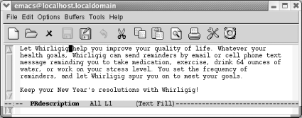
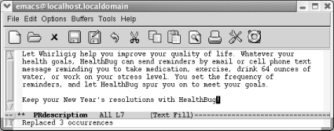
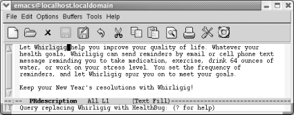
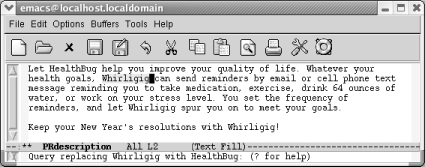
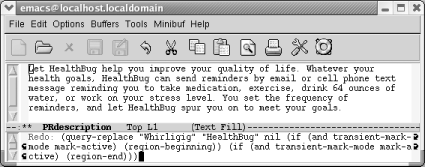
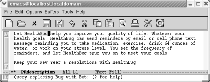
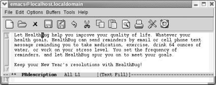
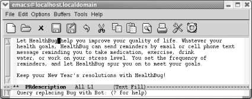

{% include JB/setup %}
{% raw %}
<div>
<div class="book" xml:lang="en"><div class="book"><div class="book"><div class="book"><h1 class="title"><a id="gnu3-CHP-3-SECT-2" class="calibre1"></a>Search and Replace</h1></div></div></div><p class="copyright">Search and replace definitely go together, like coffee and cream.
Let's say you're working on a new
software application and at the last possible moment, the Marketing
Department decides to change the product's name.</p><p class="copyright">Tere's a press release for Whirligig, an email
service that periodically reminds you to make healthy lifestyle
changes like exercising, drinking water, and taking vitamins. The
level of harassment or, as the marketing department says,
encouragement, can be set by the user. Whirligig
isn't really the most descriptive name, so at the
last minute the Marketing Department changes it to HealthBug.</p><div class="book" xml:lang="en"><div class="book"><div class="book"><div class="book"><h2 class="title1"><a id="gnu3-CHP-3-SECT-2.1" class="calibre1"></a>Simple Search and Replace Operations</h2></div></div></div><p class="copyright">Assume you're in the <a id="gnu3-CHP-3-ITERM-1894" class="calibre2"></a>situation
we just described. You want to replace every occurrence of one string
with another. You know that Whirligig is never correct, and there is
absolutely no ambiguity about how you want to replace it. When you
want to replace every instance of a given string, you can use a
simple command that tells Emacs to do just that. Type <span><strong class="calibre5">M-x replace-string Enter</strong></span>, then type the search
string and press <span><strong class="calibre5">Enter</strong></span>. Now type the
replacement string and press <span><strong class="calibre5">Enter</strong></span>
again. Emacs replaces all occurrences in the file from the cursor
position onward. If you want to search and replace throughout the
file, press <span><strong class="calibre5">M-&lt;</strong></span> to go to the
beginning of the file before typing this command.
Here's a quick example of using <span><strong class="calibre5">replace-string</strong></span>.</p><div class="book"><a id="ch03-6-fm2xml" class="calibre2"></a><table class="calibre8"><colgroup class="calibre9"><col class="calibre10"/></colgroup><tbody class="calibre15"><tr class="calibre12"><td class="calibre17">
                           <p class="copyright">Initial state:</p>
                        </td></tr><tr class="calibre12"><td class="calibre17">
                           <p class="copyright">
                              </p><div class="book"><div class="mediaobject"><a id="I_3_tt79" class="calibre2"></a></div></div><p class="copyright">
                           </p>
                        </td></tr><tr class="calibre12"><td class="calibre19">
                           <p class="copyright">Whirligig appears four times, but the cursor is positioned after the
first instance.</p>
                        </td></tr></tbody></table></div><p class="copyright">Now we'll do the replacement.</p><div class="book"><a id="ch03-7-fm2xml" class="calibre2"></a><table class="calibre8"><colgroup class="calibre9"><col class="calibre10"/></colgroup><tbody class="calibre15"><tr class="calibre12"><td class="calibre17">
                           <p class="copyright">Type: <span><strong class="calibre5">M-x replace-string Enter Whirligig Enter
HealthBug Enter</strong></span>
                           </p>
                        </td></tr><tr class="calibre12"><td class="calibre17">
                           <p class="copyright">
                              </p><div class="book"><div class="mediaobject"><a id="I_3_tt80" class="calibre2"></a></div></div><p class="copyright">
                           </p>
                        </td></tr><tr class="calibre12"><td class="calibre19">
                           <p class="copyright">Emacs replaces all instances from the cursor position onward.</p>
                        </td></tr></tbody></table></div><p class="copyright">The replacement occurs only from the cursor position onward;
<span><em class="calibre7">Whirligig</em></span> in the first sentence is still
incorrect. We'll work with this example again in a
moment.</p></div><div class="book" xml:lang="en"><div class="book"><div class="book"><div class="book"><h2 class="title1"><a id="gnu3-CHP-3-SECT-2.2" class="calibre1"></a>Query-Replace</h2></div></div></div><p class="copyright">Few search and replace <a id="gnu3-CHP-3-ITERM-1895" class="calibre2"></a>
               <a id="gnu3-CHP-3-ITERM-1896" class="calibre2"></a>
               <a id="gnu3-CHP-3-ITERM-1897" class="calibre2"></a>situations are as straightforward as
those we've described. Often you're
not sure that you want to replace every appearance of your search
string: a global replacement can be reckless. If you want to decide
whether to replace the string on a case-by-case basis, use a
query-replace, which allows you to change a string conditionally
throughout a file. After Emacs finds an occurrence of the search
string, it asks whether it should replace it, and you respond
accordingly.</p><p class="copyright">To use query-replace, go to the beginning of the buffer using
<span><strong class="calibre5">M-&lt;</strong></span> and then type <span><strong class="calibre5">M-%</strong></span>. The prompt <code class="calibre21">Query
replace</code>: appears in the minibuffer. Type the search string
and press <span><strong class="calibre5">Enter</strong></span>. Now this appears:</p><a id="I_3_tt81" class="calibre2"></a><pre class="programlisting">Query replace <em class="calibre7"><code class="calibre32">searchstring </code></em> with:</pre><p class="copyright">Type the replacement string and press <span><strong class="calibre5">Enter</strong></span>. So far, this procedure is almost
identical to a <span><strong class="calibre5">replace-string</strong></span>
operation; only the prompts are different.</p><p class="copyright">Emacs now searches for the first occurrence of the search string.
When it finds one, a new prompt appears:</p><a id="I_3_tt82" class="calibre2"></a><pre class="programlisting">Query replacing <em class="calibre7"><code class="calibre32">searchstring </code></em> with <em class="calibre7"><code class="calibre32">newstring</code></em></pre><p class="copyright">Before performing the replacement, Emacs waits for a response to tell
it what to do. <a class="calibre2" href="ch03s02.html#gnu3-CHP-3-TABLE-3" title="Table 3-3. Responses during query-replace">Table 3-3</a> lists the possible
responses and
<a id="gnu3-CHP-3-ITERM-1898" class="calibre2"></a>their
results.</p><div class="book"><a id="gnu3-CHP-3-TABLE-3" class="calibre2"></a><p class="title2"><b class="calibre25">Table 3-3. Responses during query-replace</b></p><div class="table-contents"><table summary="Responses during query-replace" class="calibre8"><colgroup class="calibre9"><col class="calibre10"/><col class="calibre10"/></colgroup><thead class="calibre11"><tr class="calibre12"><th class="calibre26">
                           <p class="copyright">
                              <span><strong class="calibre5">Keystrokes</strong></span>
                           </p>
                        </th><th class="calibre27">
                           <p class="copyright">
                              <span><strong class="calibre5">Action</strong></span>
                           </p>
                        </th></tr></thead><tbody class="calibre15"><tr class="calibre12"><td class="calibre28">
                           <p class="copyright">
                              <span><strong class="calibre5">Space</strong></span> or <span><strong class="calibre5">y</strong></span>
                           </p>
                        </td><td class="calibre29">
                           <p class="copyright">Replace <em class="calibre7"><code class="calibre21">searchstring</code></em> with
<em class="calibre7"><code class="calibre21">newstring</code></em> and go to the next instance of
the string.</p>
                        </td></tr><tr class="calibre12"><td class="calibre28">
                           <p class="copyright">
                              <span><strong class="calibre5">Del</strong></span> or <span><strong class="calibre5">n</strong></span>
                           </p>
                        </td><td class="calibre29">
                           <p class="copyright">Don't replace; move to next instance.</p>
                        </td></tr><tr class="calibre12"><td class="calibre28">
                           <p class="copyright">.</p>
                        </td><td class="calibre29">
                           <p class="copyright">Replace the current instance and quit.</p>
                        </td></tr><tr class="calibre12"><td class="calibre28">
                           <p class="copyright">,</p>
                        </td><td class="calibre29">
                           <p class="copyright">Replace and let me see the result before moving on. (Press  <span><strong class="calibre5">Space</strong></span> or <span><strong class="calibre5">y</strong></span>
to move on.)</p>
                        </td></tr><tr class="calibre12"><td class="calibre28">
                           <p class="copyright">
                              <span><strong class="calibre5">!</strong></span>
                           </p>
                        </td><td class="calibre29">
                           <p class="copyright">Replace all the rest and don't ask.</p>
                        </td></tr><tr class="calibre12"><td class="calibre28">
                           <p class="copyright">
                              <span><strong class="calibre5">^</strong></span>
                           </p>
                        </td><td class="calibre29">
                           <p class="copyright">Back up to the previous instance.</p>
                        </td></tr><tr class="calibre12"><td class="calibre28">
                           <p class="copyright">
                              <span><strong class="calibre5">Enter</strong></span> or <span><strong class="calibre5">q</strong></span>
                           </p>
                        </td><td class="calibre29">
                           <p class="copyright">Exit query-replace.</p>
                        </td></tr><tr class="calibre12"><td class="calibre28">
                           <p class="copyright">
                              <span><strong class="calibre5">E</strong></span>
                           </p>
                        </td><td class="calibre29">
                           <p class="copyright">Modify the replacement string.</p>
                        </td></tr><tr class="calibre12"><td class="calibre28">
                           <p class="copyright">
                              <span><strong class="calibre5">C-r</strong></span>
                           </p>
                        </td><td class="calibre29">
                           <p class="copyright">Enter a recursive edit (discussed in detail later).</p>
                        </td></tr><tr class="calibre12"><td class="calibre28">
                           <p class="copyright">
                              <span><strong class="calibre5">C-w</strong></span>
                           </p>
                        </td><td class="calibre29">
                           <p class="copyright">Delete this instance and enter a recursive edit (so you can make a
custom replacement).</p>
                        </td></tr><tr class="calibre12"><td class="calibre28">
                           <p class="copyright">
                              <span><strong class="calibre5">C-M-c</strong></span>
                           </p>
                        </td><td class="calibre29">
                           <p class="copyright">Exit recursive edit and resume query-replace.</p>
                        </td></tr><tr class="calibre12"><td class="calibre30">
                           <p class="copyright">
                              <span><strong class="calibre5">C-]</strong></span>
                           </p>
                        </td><td class="calibre31">
                           <p class="copyright">Exit recursive edit and exit query-replace.</p>
                        </td></tr></tbody></table></div></div><br class="book"/><p class="copyright">This list seems like a lot of keystrokes to remember, but you can get
away with knowing two or three. Most of the time
you'll respond to the prompt by pressing  <span><strong class="calibre5">Space</strong></span>, telling Emacs to perform the
replacement and go on to the next instance, or <span><strong class="calibre5">n</strong></span> to skip this replacement and go on to the
next instance. If you're not too sure what will
happen, enter a comma (,); Emacs
makes the replacement but doesn't go on until you
press <span><strong class="calibre5">Space</strong></span>. After performing the
first few replaces, you may realize that there's no
need to inspect every change individually. Typing an exclamation mark
(<span><strong class="calibre5">!</strong></span>) tells Emacs to go ahead and
finish the job without bothering you anymore. If you remember these
keystrokes, you're all set.</p><p class="copyright">How does this work in practice? Let's revisit our
previous example, assuming that we want to change
<span><em class="calibre7">Whirligig</em></span> to <span><em class="calibre7">HealthBug</em></span>
throughout (and that we didn't save the changes we
made with <span><strong class="calibre5">replace-string</strong></span>).</p><div class="book"><a id="ch03-8-fm2xml" class="calibre2"></a><table class="calibre8"><colgroup class="calibre9"><col class="calibre10"/></colgroup><tbody class="calibre15"><tr class="calibre12"><td class="calibre17">
                           <p class="copyright">Type: <span><strong class="calibre5">M-&lt; M-% Whirligig Enter HealthBug
Enter</strong></span>
                           </p>
                        </td></tr><tr class="calibre12"><td class="calibre17">
                           <p class="copyright">
                              </p><div class="book"><div class="mediaobject"><a id="I_3_tt83" class="calibre2"></a></div></div><p class="copyright">
                           </p>
                        </td></tr><tr class="calibre12"><td class="calibre19">
                           <p class="copyright">You're ready to replace the first occurrence; press
 <span><strong class="calibre5">Space</strong></span> to go on.</p>
                        </td></tr></tbody></table></div><div class="book"><a id="ch03-9-fm2xml" class="calibre2"></a><table class="calibre8"><colgroup class="calibre9"><col class="calibre10"/></colgroup><tbody class="calibre15"><tr class="calibre12"><td class="calibre17">
                           <p class="copyright">Press:  <span><strong class="calibre5">Space</strong></span>
                           </p>
                        </td></tr><tr class="calibre12"><td class="calibre17">
                           <p class="copyright">
                              </p><div class="book"><div class="mediaobject"><a id="I_3_tt84" class="calibre2"></a></div></div><p class="copyright">
                           </p>
                        </td></tr><tr class="calibre12"><td class="calibre19">
                           <p class="copyright">When you press <span><strong class="calibre5">Space</strong></span>, Emacs replaces
the first word; the query-replace operation then moves to the second
word.</p>
                        </td></tr></tbody></table></div><p class="copyright">This procedure continues until you reach the end of the file. As
we've said, typing <span><strong class="calibre5">!</strong></span> fixes the rest of the file.</p><p class="copyright">In <a class="calibre2" href="ch03s02.html#gnu3-CHP-3-TABLE-3" title="Table 3-3. Responses during query-replace">Table 3-3</a>, you might have noticed that several
keys, such as  <span><strong class="calibre5">Space</strong></span>, have
specialized meanings while the replacement is in progress. In
practice, using these keys for a different function is not confusing,
though it might sound bad on paper. You might want to try a
query-replace on a practice file to get the hang of using the
different responses. If you are easily amused, you might enjoy
opening the Emacs FAQ, saving it as another file, then replacing
Emacs throughout.</p></div><div class="book" xml:lang="en"><div class="book"><div class="book"><div class="book"><h2 class="title1"><a id="gnu3-CHP-3-SECT-2.3" class="calibre1"></a>Repeating Query-Replaces (and Other Complex Commands)</h2></div></div></div><p class="copyright">Now that you've learned the
<a id="gnu3-CHP-3-ITERM-1899" class="calibre2"></a>
               <a id="gnu3-CHP-3-ITERM-1900" class="calibre2"></a>
               <a id="gnu3-CHP-3-ITERM-1901" class="calibre2"></a>
               <a id="gnu3-CHP-3-ITERM-1902" class="calibre2"></a>basics
of query-replace, let's talk about a shortcut that
applies not only in query-replace but anywhere in Emacs: repeating
complex commands, with slight modifications. We often exit a
query-replace by mistake or decide that the replacement we really
wanted was just slightly different. Do we have to type it all again?
No. Simply go the beginning of the file and press <span><strong class="calibre5">C-x Esc Esc</strong></span>. The last complex command you
typed appears. If it's not the one you want, type
<span><strong class="calibre5">M-p</strong></span> to see the previous command (do
this as many times as necessary; <span><strong class="calibre5">M-n</strong></span>
goes to the next command). For example, let's go to
the beginning of the file and repeat the query-replace we just
carried out.</p><div class="book"><a id="ch03-10-fm2xml" class="calibre2"></a><table class="calibre8"><colgroup class="calibre9"><col class="calibre10"/></colgroup><tbody class="calibre15"><tr class="calibre12"><td class="calibre17">
                           <p class="copyright">Type: <span><strong class="calibre5">M-&lt;</strong></span> followed by <span><strong class="calibre5">C-x Esc Esc</strong></span>
                           </p>
                        </td></tr><tr class="calibre12"><td class="calibre17">
                           <p class="copyright">
                              </p><div class="book"><div class="mediaobject"><a id="I_3_tt85" class="calibre2"></a></div></div><p class="copyright">
                           </p>
                        </td></tr><tr class="calibre12"><td class="calibre19">
                           <p class="copyright">Emacs puts the last complex command in the minibuffer; in fact it
looks more complex than we remember it.</p>
                        </td></tr></tbody></table></div><p class="copyright">When we press <span><strong class="calibre5">M-&lt;</strong></span>, we move to the
beginning of the file; <a id="gnu3-CHP-3-ITERM-1903" class="calibre2"></a>when we press <span><strong class="calibre5">C-x Esc Esc</strong></span>, the last complex command is
displayed. Emacs speaks to itself in dark words, but we can still see
that this is the command that we want.</p><p class="copyright">This is the right command, so we don't have to press
<span><strong class="calibre5">M-p</strong></span> to see a previous command. If we
wanted to, we could change the query-replace strings before pressing
<span><strong class="calibre5">Enter</strong></span>. In this case, the Marketing
Department has once again changed the product's name
from HealthBug (since bug could be construed as pest) to HealthBot
(neutral, but a bit less descriptive in our opinion). Our earlier
query replace changed Whirligig to HealthBug. We need to modify this
command so it replaces <span><em class="calibre7">Bug</em></span> with
<span><em class="calibre7">Bot</em></span>.</p><div class="book"><a id="ch03-11-fm2xml" class="calibre2"></a><table class="calibre8"><colgroup class="calibre9"><col class="calibre10"/></colgroup><tbody class="calibre15"><tr class="calibre12"><td class="calibre17">
                           <p class="copyright">In the minibuffer, change <span><em class="calibre7">Whirligig</em></span> to
<span><em class="calibre7">Bug</em></span> and <span><em class="calibre7">HealthBug</em></span> to
<span><em class="calibre7">Bot</em></span> and press <span><strong class="calibre5">Enter</strong></span>.</p>
                        </td></tr><tr class="calibre12"><td class="calibre17">
                           <p class="copyright">
                              </p><div class="book"><div class="mediaobject"><a id="I_3_tt86" class="calibre2"></a></div></div><p class="copyright">
                           </p>
                        </td></tr><tr class="calibre12"><td class="calibre19">
                           <p class="copyright">Pressing <span><strong class="calibre5">Enter</strong></span> executes the command
again with the modified search and replacement strings.</p>
                        </td></tr></tbody></table></div><p class="copyright">As we mentioned, <span><strong class="calibre5">C-x Esc Esc</strong></span> works
for any command involving input in the minibuffer, not just
query-replace. But we use this feature most frequently in
query-replace. It is also good for repeating keyboard macros (see
<a class="calibre2" href="ch06.html" title="Chapter 6. Writing Macros">Chapter 6</a>).</p></div><div class="book" xml:lang="en"><div class="book"><div class="book"><div class="book"><h2 class="title1"><a id="gnu3-CHP-3-SECT-2.4" class="calibre1"></a>Recursive Editing</h2></div></div></div><p class="copyright">When you do a query-replace, you
<a id="gnu3-CHP-3-ITERM-1904" class="calibre2"></a>
               <a id="gnu3-CHP-3-ITERM-1905" class="calibre2"></a>inevitably see something else you want
to change in the file. Try it a few
times—you'll see what we mean! We typically
try to remember the problem until we're done, then
get frustrated when we forget exactly what and where the problem was.</p><p class="copyright">Fortunately, Emacs provides an easier way. It allows you to start a
recursive edit while you're in the middle of a
query-replace. By starting a recursive edit, you effectively put
query-replace on hold while you make any other desired edits. When
you exit the recursive edit, the query-replace resumes where you left
off.</p><p class="copyright">To start a recursive edit while in
<a id="gnu3-CHP-3-ITERM-1906" class="calibre2"></a>query-replace, press <span><strong class="calibre5">C-r</strong></span>. (Note that like many other key bindings,
<span><strong class="calibre5">C-r</strong></span> has a different meaning in
query-replace than it does in standard Emacs.) When you start a
recursive edit, square brackets (<code class="calibre21">[ ]</code>) appear on
the mode line. Let's go back, one more time, to our
public relations piece. You've used query-replace to
find the first Bug to change to Bot, and you are about to press
<span><strong class="calibre5">Space</strong></span> to fix it, when you remember
that the lawyers said that the "64 ounces of
water" statement was too specific and could be
construed as giving medical advice. A quick recursive edit saves the
day.</p><div class="book"><a id="ch03-12-fm2xml" class="calibre2"></a><table class="calibre8"><colgroup class="calibre9"><col class="calibre10"/></colgroup><tbody class="calibre15"><tr class="calibre12"><td class="calibre17">
                           <p class="copyright">Type: <span><strong class="calibre5">C-r</strong></span>
                           </p>
                        </td></tr><tr class="calibre12"><td class="calibre17">
                           <p class="copyright">
                              </p><div class="book"><div class="mediaobject"><a id="I_3_tt87" class="calibre2"></a></div></div><p class="copyright">
                           </p>
                        </td></tr><tr class="calibre12"><td class="calibre19">
                           <p class="copyright">Notice the square brackets around <code class="calibre21">(Text Fill)</code>,
indicating a recursive edit in progress.</p>
                        </td></tr></tbody></table></div><p class="copyright">Now do any editing you want to; you are in an editing mode just like
standard Emacs. Move down to the third line and delete
"64 ounces of." When you want to
resume the query-replace, press <span><strong class="calibre5">C-M-c</strong></span>. This command tells Emacs to leave the
recursive edit and reactivate the query-replace. Emacs moves back to
the point where you were when you started the recursive edit. You can
then continue making replacements just as if nothing had happened.</p><div class="book"><a id="ch03-13-fm2xml" class="calibre2"></a><table class="calibre8"><colgroup class="calibre9"><col class="calibre10"/></colgroup><tbody class="calibre15"><tr class="calibre12"><td class="calibre17">
                           <p class="copyright">Delete "64 ounces of," then type
<span><strong class="calibre5">C-M-c</strong></span>
                           </p>
                        </td></tr><tr class="calibre12"><td class="calibre17">
                           <p class="copyright">
                              </p><div class="book"><div class="mediaobject"><a id="I_3_tt88" class="calibre2"></a></div></div><p class="copyright">
                           </p>
                        </td></tr><tr class="calibre12"><td class="calibre19">
                           <p class="copyright">Emacs goes back to query-replace and you press <span><strong class="calibre5">Space</strong></span> to fix the next Bug.</p>
                        </td></tr></tbody></table></div><p class="copyright">If you decide to exit the recursive edit and cancel the query-replace
in one fell swoop, you can type <span><strong class="calibre5">C-]</strong></span>
(for <span><strong class="calibre5">abort-recursive-edit</strong></span>) or
<span><strong class="calibre5">M-x top-level Enter</strong></span> rather than
<span><strong class="calibre5">C-M-c</strong></span>.</p><p class="copyright">In fact, you can start a recursive edit at any time, not just when
you're in a query-replace. The command <span><strong class="calibre5">M-x recursive-edit Enter</strong></span> puts you into a
recursive edit; <span><strong class="calibre5">C-M-c</strong></span> takes you out
of the recursive edit and brings you back to what you were doing
before. You can even have recursive edits within recursive edits,
although the possibility for confusion increases with each new level.</p></div><div class="book" xml:lang="en"><div class="book"><div class="book"><div class="book"><h2 class="title1"><a id="gnu3-CHP-3-SECT-2.5" class="calibre1"></a>Are Emacs Searches Case-Sensitive?</h2></div></div></div><p class="copyright">By default, Emacs searches <a id="gnu3-CHP-3-ITERM-1907" class="calibre2"></a>
               <a id="gnu3-CHP-3-ITERM-1908" class="calibre2"></a>are
not case-sensitive. Look at the Options menu and
you'll see that the
<a id="gnu3-CHP-3-ITERM-1909" class="calibre2"></a>
               <a id="gnu3-CHP-3-ITERM-1910" class="calibre2"></a>option Case-Insensitive Search is the
only option that is checked by default.</p><p class="copyright">What does this mean in practical terms? If you search for the word
<span><em class="calibre7">random</em></span>, the search finds
<span><em class="calibre7">random</em></span>, <span><em class="calibre7">Random</em></span>, and
<span><em class="calibre7">RANDOM</em></span>, as well as oddities like
<span><em class="calibre7">RanDoM</em></span> and <span><em class="calibre7">rANdOM</em></span>. When
doing replacements, Emacs pays attention to the form of the word
being replaced and replaces it with the same case. If you replaced
<span><em class="calibre7">random</em></span> with <span><em class="calibre7">tandem</em></span>,
<span><em class="calibre7">Random</em></span> would be replaced with
<span><em class="calibre7">Tandem</em></span>, and <span><em class="calibre7">RANDOM</em></span> would be
replaced with <span><em class="calibre7">TANDEM</em></span>. If you mix capitalization,
the replacement string appears just as you type it.
<span><em class="calibre7">healthbug</em></span> would be replaced with
<span><em class="calibre7">HealthBug</em></span> if that was the case in the replacement string.
In other words, the default search and replacement operations usually
do what you want: they find a search string regardless of its case
and adjust the replacement appropriately for its context. However,
sometimes you need finer control.</p><p class="copyright">The variable <span><strong class="calibre5">case-fold-search</strong></span>
determines <a id="gnu3-CHP-3-ITERM-1911" class="calibre2"></a>
               <a id="gnu3-CHP-3-ITERM-1912" class="calibre2"></a>
               <a id="gnu3-CHP-3-ITERM-1913" class="calibre2"></a>whether
searches are case-sensitive. It applies to all searches: incremental
searches, word searches, searches within search-and-replace
operations, and so on. By default, <span><strong class="calibre5">case-fold-search</strong></span> is set to <span><strong class="calibre5">t</strong></span>, which means "ignore case
unless the user types in mixed or uppercase." This
sensible default is usually just what you want. But if you need
case-sensitive searches, the Case-Insensitive Search option on the
Options menu provides an easy way to experiment with this variable.</p><p class="copyright">Likewise, if you don't want Emacs to
<a id="gnu3-CHP-3-ITERM-1914" class="calibre2"></a>
               <a id="gnu3-CHP-3-ITERM-1915" class="calibre2"></a>
               <a id="gnu3-CHP-3-ITERM-1916" class="calibre2"></a>adjust
the case of your replacement strings, you can set the variable
<span><strong class="calibre5">case-replace</strong></span>. Again, its value is
<span><strong class="calibre5">t</strong></span> (for
"true") by default, which means
"adjust the case of a replacement string to match
the original text"—that is, capitalize the
replacement if the original word was capitalized and so on. Setting
this variable to <span><strong class="calibre5">nil</strong></span> means
"never adjust the case of the replacement string;
always put it in exactly as I typed it." To change
the value of <span><strong class="calibre5">case-replace</strong></span>, type
<span><strong class="calibre5">M-x</strong></span> 
               <span><strong class="calibre5">set-variable</strong></span> 
               <span><strong class="calibre5">Enter
case-replace Enter nil Enter</strong></span> (there's no
menu option for this variable).</p><p class="copyright">Both the menu option and the <span><strong class="calibre5">set-variable</strong></span> command change the behavior of
Emacs only temporarily. If you start a new editing session,
you'll be back to the default behavior. This is
probably what you want, because searching separately for capitalized
and lowercase words is inconvenient.</p><p class="copyright">You can set the value for the Case-Insensitive Search option
permanently by selecting Save Options from the Options menu or by
adding this line to your <span><em class="calibre7">.emacs</em></span> file:</p><a id="I_3_tt89" class="calibre2"></a><pre class="programlisting">(setq-default case-fold-search nil)  ; require exact matches</pre><p class="copyright">To set <span><strong class="calibre5">case-replace</strong></span> permanently, add
the following line to your <span><em class="calibre7">.emacs</em></span> file.
You'll need to restart Emacs to have the change take
effect.</p><a id="I_3_tt90" class="calibre2"></a><pre class="programlisting">(setq-default case-replace nil)      ; never change case when replacing</pre><p class="copyright">You could change these variables through Emacs's
interactive customization facility, Custom, instead (see <a class="calibre2" href="ch10.html" title="Chapter 10. Customizing Emacs">Chapter 10</a>).</p></div><div class="book" xml:lang="en"><div class="book"><div class="book"><div class="book"><h2 class="title1"><a id="gnu3-CHP-3-SECT-2.6" class="calibre1"></a>Regular Expressions for Search and Replacement Operations</h2></div></div></div><p class="copyright">Sometimes none of the simpler <a id="gnu3-CHP-3-ITERM-1917" class="calibre2"></a>
               <a id="gnu3-CHP-3-ITERM-1918" class="calibre2"></a>searches described in this chapter are
adequate. Regular expressions allow you to build searches with
strings that contain various wildcards.</p><p class="copyright">
               <a class="calibre2" href="ch03s02.html#gnu3-CHP-3-TABLE-4" title="Table 3-4. Characters for creating regular expressions">Table 3-4</a> shows some of the
<a id="gnu3-CHP-3-ITERM-1919" class="calibre2"></a>
               <a id="gnu3-CHP-3-ITERM-1920" class="calibre2"></a>characters you can use in creating
a regular expression.</p><div class="book"><a id="gnu3-CHP-3-TABLE-4" class="calibre2"></a><p class="title2"><b class="calibre25">Table 3-4. Characters for creating regular expressions</b></p><div class="table-contents"><table summary="Characters for creating regular expressions" class="calibre8"><colgroup class="calibre9"><col class="calibre10"/><col class="calibre10"/></colgroup><thead class="calibre11"><tr class="calibre12"><th class="calibre26">
                           <p class="copyright">
                              <span><strong class="calibre5">Character(s)</strong></span>
                           </p>
                        </th><th class="calibre27">
                           <p class="copyright">
                              <span><strong class="calibre5">Match</strong></span>
                           </p>
                        </th></tr></thead><tbody class="calibre15"><tr class="calibre12"><td class="calibre28">
                           <p class="copyright">
                              <span><strong class="calibre5">^</strong></span>
                           </p>
                        </td><td class="calibre29">
                           <p class="copyright">Matches the beginning of a line.</p>
                        </td></tr><tr class="calibre12"><td class="calibre28">
                           <p class="copyright">
                              <span><strong class="calibre5">$</strong></span>
                           </p>
                        </td><td class="calibre29">
                           <p class="copyright">Matches the end of a line.</p>
                        </td></tr><tr class="calibre12"><td class="calibre28">
                           <p class="copyright">.</p>
                        </td><td class="calibre29">
                           <p class="copyright">Matches any single character (like ? in filenames).</p>
                        </td></tr><tr class="calibre12"><td class="calibre28">
                           <p class="copyright">
                              <span><strong class="calibre5">.*</strong></span>
                           </p>
                        </td><td class="calibre29">
                           <p class="copyright">Matches any group of zero or more characters (. matches any character
and * matches zero or more of the previous character).</p>
                        </td></tr><tr class="calibre12"><td class="calibre28">
                           <p class="copyright">
                              <span><strong class="calibre5">\&lt;</strong></span>
                           </p>
                        </td><td class="calibre29">
                           <p class="copyright">Matches the beginning of a word.</p>
                        </td></tr><tr class="calibre12"><td class="calibre28">
                           <p class="copyright">
                              <span><strong class="calibre5">\&gt;</strong></span>
                           </p>
                        </td><td class="calibre29">
                           <p class="copyright">Matches the end of a word.</p>
                        </td></tr><tr class="calibre12"><td class="calibre28">
                           <p class="copyright">
                              <span><strong class="calibre5">[ ]</strong></span>
                           </p>
                        </td><td class="calibre29">
                           <p class="copyright">Matches any character specified within the brackets; for example,
[a-z] matches any alphabetic character.</p>
                        </td></tr><tr class="calibre12"><td class="calibre28">
                           <p class="copyright">
                              <span><strong class="calibre5">\s, \S</strong></span>
                           </p>
                        </td><td class="calibre29">
                           <p class="copyright">Matches any whitespace character: space, a newline, a tab, a carriage
return, a formfeed, or a backspace; \S matches any character except
whitespace.</p>
                        </td></tr><tr class="calibre12"><td class="calibre28">
                           <p class="copyright">
                              <span><strong class="calibre5">\d, \D</strong></span>
                           </p>
                        </td><td class="calibre29">
                           <p class="copyright">Matches any single digit, 0-9; \D matches any character but a digit.</p>
                        </td></tr><tr class="calibre12"><td class="calibre30">
                           <p class="copyright">
                              <span><strong class="calibre5">\w, \W</strong></span>
                           </p>
                        </td><td class="calibre31">
                           <p class="copyright">Matches any "word" character
(upper- and lowercase letters, digits, and the underscore character);
\W matches any character but these.</p>
                        </td></tr></tbody></table></div></div><br class="book"/><p class="copyright">If you do a regular expression search for <span><strong class="calibre5">^word$</strong></span>, you would find instances of
<span><em class="calibre7">word</em></span> on a line by itself. The <span><strong class="calibre5">^</strong></span> says that the <span><strong class="calibre5">w</strong></span> must be the first character on the line, the
<span><strong class="calibre5">$</strong></span> says that the <span><strong class="calibre5">d</strong></span> must be the last character.</p><p class="copyright">If you wanted to find all words starting with
<span><em class="calibre7">beg</em></span> and ending with the letter
<span><em class="calibre7">s</em></span>, you could use <span><strong class="calibre5">beg[a-z]*s</strong></span> as your regular expression. This
would find the words <span><em class="calibre7">begins</em></span>,
<span><em class="calibre7">begets</em></span>, and <span><em class="calibre7">begonias</em></span>, in
addition to really odd words like <span><em class="calibre7">shibegrees</em></span> and
<span><em class="calibre7">altbegaslia</em></span>. If you don't want
these mutants—that is, if you really want words that begin with
<span><em class="calibre7">beg</em></span> and end with <span><em class="calibre7">s</em></span>, use
<span><strong class="calibre5">\&lt;beg[a-z]*s\&gt;</strong></span>. The <span><strong class="calibre5">\&lt;</strong></span> is a special sequence that matches the
beginning of a word; <span><strong class="calibre5">\&gt;</strong></span> matches
the end of a word. If you wanted to find the words
<span><em class="calibre7">beg</em></span>, <span><em class="calibre7">big</em></span>, and
<span><em class="calibre7">bag</em></span>; but not <span><em class="calibre7">begonias</em></span>, and
certainly not any strange words with <span><em class="calibre7">beg</em></span> on the
inside, you would use <span><strong class="calibre5">\&lt;b[a-z]g\&gt;</strong></span> as the regular expression.</p><p class="copyright">To search for a <span><strong class="calibre5">^</strong></span>, <span><strong class="calibre5">$</strong></span>, .,
<span><strong class="calibre5">*</strong></span>, <span><strong class="calibre5">[</strong></span>, <span><strong class="calibre5">]</strong></span>, or any
number of <a id="gnu3-CHP-3-ITERM-1921" class="calibre2"></a>
               <a id="gnu3-CHP-3-ITERM-1922" class="calibre2"></a>other special characters, you
obviously can't use the character itself. Put a
backslash (\) first—i.e., to search for a period, search for \.
For example, to search for the electronic mail
address`:</p><a id="I_3_tt91" class="calibre2"></a><pre class="programlisting">howie@mcds.com</pre><p class="copyright">the regular expression would be:</p><a id="I_3_tt92" class="calibre2"></a><pre class="programlisting">howie@mcds\.com</pre><p class="copyright">This is a barebones introduction to regular expressions; see <a class="calibre2" href="ch11.html" title="Chapter 11. Emacs Lisp Programming">Chapter 11</a> for more details and <span><em class="calibre7">Mastering
Regular Expressions</em></span> by Jeffrey Friedl
(O'Reilly) for a book-length treatment of this
topic.</p><p class="copyright">You can use regular expressions in <a id="gnu3-CHP-3-ITERM-1923" class="calibre2"></a>
               <a id="gnu3-CHP-3-ITERM-1924" class="calibre2"></a>
               <a id="gnu3-CHP-3-ITERM-1925" class="calibre2"></a>
               <a id="gnu3-CHP-3-ITERM-1926" class="calibre2"></a>incremental
searches and in query-replace. <a class="calibre2" href="ch03s02.html#gnu3-CHP-3-TABLE-5" title="Table 3-5. Regular expression search commands">Table 3-5</a> lists the
commands you use for regular expression searches. Although they are
initiated with slightly <a id="gnu3-CHP-3-ITERM-1927" class="calibre2"></a>
               <a id="gnu3-CHP-3-ITERM-1928" class="calibre2"></a>
               <a id="gnu3-CHP-3-ITERM-1929" class="calibre2"></a>different commands, the
searches are the same as those described earlier in this chapter.</p><div class="book"><a id="gnu3-CHP-3-TABLE-5" class="calibre2"></a><p class="title2"><b class="calibre25">Table 3-5. Regular expression search commands</b></p><div class="table-contents"><table summary="Regular expression search commands" class="calibre8"><colgroup class="calibre9"><col class="calibre10"/><col class="calibre10"/><col class="calibre10"/></colgroup><thead class="calibre11"><tr class="calibre12"><th class="calibre26">
                           <p class="copyright">
                              <span><strong class="calibre5">Keystrokes</strong></span>
                           </p>
                        </th><th class="calibre26">
                           <p class="copyright">
                              <span><strong class="calibre5">Command name</strong></span>
                           </p>
                        </th><th class="calibre27">
                           <p class="copyright">
                              <span><strong class="calibre5">Action</strong></span>
                           </p>
                        </th></tr></thead><tbody class="calibre15"><tr class="calibre12"><td class="calibre28">
                           <p class="copyright">
                              <span><strong class="calibre5">C-M-s Enter</strong></span>
                              <span><em class="calibre7">Edit</em></span>
                              <span>→</span> 
                              <span><em class="calibre7">Search</em></span> 
                              <span>→</span>
                              <span><em class="calibre7">Regexp Forward</em></span>
                           </p>
                        </td><td class="calibre28">
                           <p class="copyright">
                              <span><strong class="calibre5">re-search-forward</strong></span>
                           </p>
                        </td><td class="calibre29">
                           <p class="copyright">Search for a regular expression forward.</p>
                        </td></tr><tr class="calibre12"><td class="calibre28">
                           <p class="copyright">
                              <span><strong class="calibre5">C-M-r Enter</strong></span>
                              <span><em class="calibre7">Edit</em></span>
                              <span>→</span> 
                              <span><em class="calibre7">Search</em></span> 
                              <span>→</span>
                              <span><em class="calibre7">Regexp Backwards</em></span>
                           </p>
                        </td><td class="calibre28">
                           <p class="copyright">
                              <span><strong class="calibre5">re-search-backward</strong></span>
                           </p>
                        </td><td class="calibre29">
                           <p class="copyright">Search for a regular expression backward.</p>
                        </td></tr><tr class="calibre12"><td class="calibre28">
                           <p class="copyright">
                              <span><strong class="calibre5">C-M-s</strong></span>
                              <span><em class="calibre7">Edit</em></span>
                              <span>→</span> 
                              <span><em class="calibre7">Search</em></span> 
                              <span>→</span>
                              <span><em class="calibre7">Incremental Search</em></span> 
                              <span>→</span> 
                              <span><em class="calibre7">Forward
Regexp</em></span>
                           </p>
                        </td><td class="calibre28">
                           <p class="copyright">
                              <span><strong class="calibre5">isearch-forward-regexp</strong></span>
                           </p>
                        </td><td class="calibre29">
                           <p class="copyright">Search incrementally forward for a regular expression.</p>
                        </td></tr><tr class="calibre12"><td class="calibre28">
                           <p class="copyright">
                              <span><strong class="calibre5">C-M-r</strong></span>
                              <span><em class="calibre7">Edit</em></span>
                              <span>→</span> 
                              <span><em class="calibre7">Search</em></span> 
                              <span>→</span>
                              <span><em class="calibre7">Incremental Search</em></span> 
                              <span>→</span> 
                              <span><em class="calibre7">Backward
Regexp</em></span>
                           </p>
                        </td><td class="calibre28">
                           <p class="copyright">
                              <span><strong class="calibre5">isearch-backward-regexp</strong></span>
                           </p>
                        </td><td class="calibre29">
                           <p class="copyright">Search incrementally backward for a regular expression.</p>
                        </td></tr><tr class="calibre12"><td class="calibre28">
                           <p class="copyright">
                              <span><strong class="calibre5">C-M-%</strong></span>
                              <span><em class="calibre7">Edit</em></span>
                              <span>→</span> 
                              <span><em class="calibre7">Replace</em></span> 
                              <span>→</span>
                              <span><em class="calibre7">Replace Regexp</em></span>
                           </p>
                        </td><td class="calibre28">
                           <p class="copyright">
                              <span><strong class="calibre5">query-replace-regexp</strong></span>
                           </p>
                        </td><td class="calibre29">
                           <p class="copyright">Query-replace a regular expression.</p>
                        </td></tr><tr class="calibre12"><td class="calibre30">
                           <p class="copyright">(<span><em class="calibre7">none</em></span>)</p>
                        </td><td class="calibre30">
                           <p class="copyright">
                              <span><strong class="calibre5">replace-regexp</strong></span>
                           </p>
                        </td><td class="calibre31">
                           <p class="copyright">Globally replace a regular expression unconditionally (use with
caution).</p>
                        </td></tr></tbody></table></div></div><br class="book"/></div></div></div>

{% endraw %}

